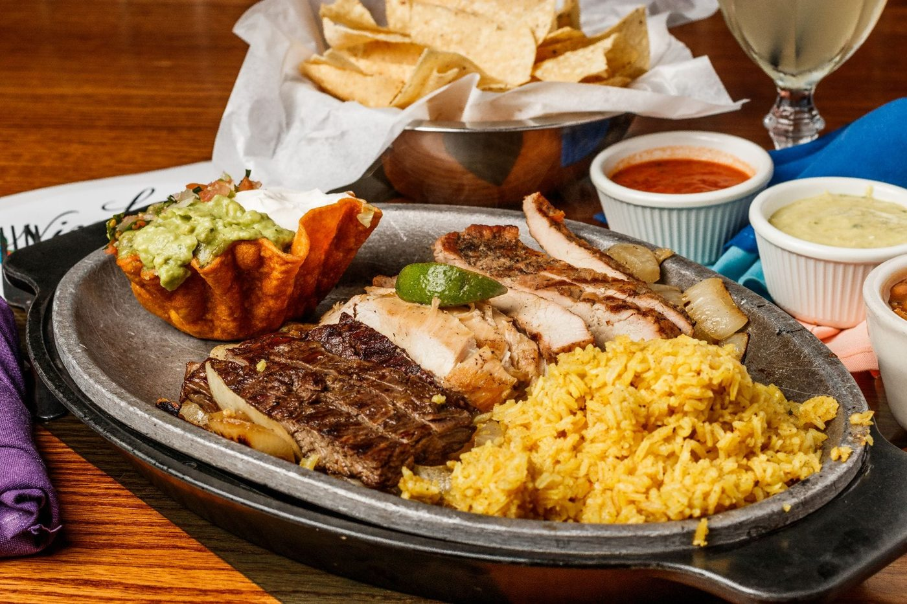
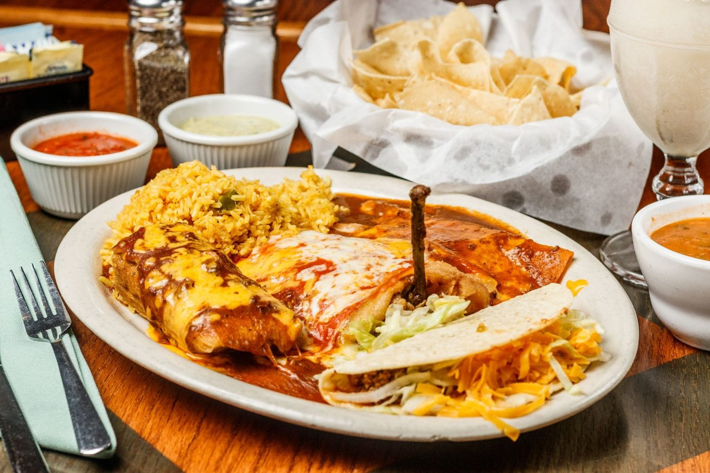

In 1973, Ninfa Rodriguez Laurenzo opened a small 10-table restaurant on Navigation Street in Houston, cooking with her own pots and pans. Everyone called her Mama, and she built something bigger than a restaurant: a place where every guest was treated like family, and every margarita was made to be shared.
Here in Waco, we carry her legacy forward one plate, one pitcher, one welcome at a time.

Our recipes haven't changed because they didn't need to. Tortillas are pressed by hand daily, queso is simmered rich and a little spicy, and our fajitas are marinated and grilled the traditional way — no shortcuts, no substitutes.
From carnitas to crawfish enchiladas, every dish honors the tradition Mama Ninfa built one pan at a time.

You'll find us in the heart of downtown Waco at 220 South 3rd Street, where the smell of sizzling fajitas and fresh tortillas spills out onto the sidewalk. It's the kind of place where regulars have their usual table and first-time guests leave feeling like regulars too.
Come by for lunch, stay for the margaritas.
